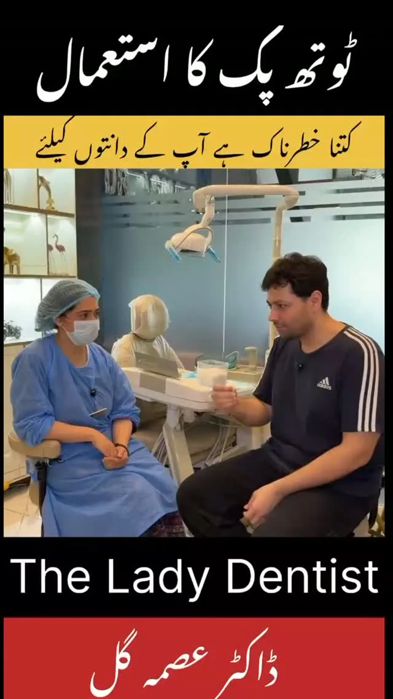

When food gets caught
A toothpick can press into the gums. The clinic recommends floss to clean the space between teeth. If the same area traps food repeatedly, mention it at your next checkup.
Make it part of your routine
Choose a time when you can clean between your teeth without rushing. If floss feels awkward or causes discomfort, ask the dental team to show you a technique or discuss another tool.
Ask about a checkup